Modalidad A
Vuelo crítico dedicado
Un paciente de alta complejidad
- Cobertura directa punto a punto (Maracaibo – Caracas).
- Equipamiento UCI completo: ventilación mecánica, bomba de infusión y equipo médico especializado en cabina.

Ver la campaña Hablar con alianzasResponsabilidad social empresarial · ESG
Financie corredores aéreos de respuesta médica adaptada: desde evacuar a un paciente en estado crítico hasta trasladar a seis pasajeros en condiciones especiales en una sola misión.
Nacidos de la alianza con el Congreso Oncoaliados para proteger al paciente onco-pediátrico, evolucionamos hacia un modelo de accesibilidad total. Canalice sus fondos de Responsabilidad Social Empresarial y ESG hacia una red logística flexible, auditable y deducible de impuestos.
Un corredor logístico aéreo y terrestre diseñado para optimizar el transporte médico según la severidad de cada caso. Una misma misión aeronáutica se configura bajo dos modalidades.
Modalidad A
Un paciente de alta complejidad
Modalidad B
Hasta 6 pacientes consolidados
Flexibilidad operativa. Un mismo vuelo patrocinado por su empresa puede adaptarse para salvar a un paciente neonatal u oncológico crítico en vuelo directo, o convertirse en una ruta itinerante para trasladar a seis pasajeros en tratamiento, con movilidad reducida o neurodivergencia.
Modelos de patrocinio
Tres formas de entrar, de la misión completa al obsequio corporativo con propósito.
Misión completa · cobertura directa o consolidada
Financiamiento integral de un corredor aéreo completo, de punta a punta.
Por tramos y asientos médicos
Compra de bloques de horas de vuelo, de tramos regionales específicos dentro de una Ruta Sanitaria, o de cupos de escolta médica para pacientes en tratamiento continuo.
Regalos corporativos de impacto · $10 a $40 por unidad
Adquisición de Kits de Contención Emocional y Bioseguridad —el Héroe de Rescate en empaque estéril, o Kits Sensoriales TEA— que acompañan a los pacientes a lo largo de la Ruta Sanitaria.
Espectro de atención
La misma misión cubre tres perfiles distintos, y cada uno cambia cómo se configura la cabina.
01
Soporte intensivo de UCI «cama a cama», en vuelo directo y sin escalas.
02
Kit Sensorial Pedelton, atenuación de ruido y un abordaje de baja fricción.
03
Pacientes en camilla comercial (MEDIF / FREMEC) y soporte de oxígeno.
Comité ESG y gerencia de RSE
Deje sus datos y un gerente de alianzas corporativas se pondrá en contacto con usted.